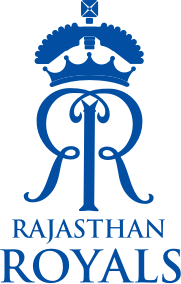
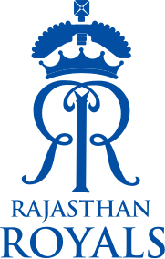

 
The 15th edition of IPL came to a sudden temporary suspension with some covid cases in few camps took place. It was originally started on April 9 with Mumbai Indians taking on Royal Challengers Bangalore in the opening match. 29 matches were done till May 2 and then the next match between RCB and KKR got postponed and on May 4 whole IPL got suspended.
BCCI has been looking for the next window and have got one in in September.
UAE will host host the rest of the IPL and Super 12 and Knockouts of t20 World Cup too with the schedule of both expected to be out soon
BCCI inspecting Pitches
BCCI team which will be present at the Event's re-inauguration
ANCHORS
COMMENTATORS
The second phase is likey to start after CPL which ends on September 15. CPL final is also preponed by 4 days on the request of BCCI
Moments to capture from Phase 1
 New boy takes a self stunner
New boy takes a self stunner
Maxwell worthy for his new franchise after a horrible last season
Fanboy Moment featuring Rohit Sharma
Parag and Tewatia selfie moment
Fanboy Moment featuring Virat Kohli
Jadeja smashed 37 runs in the over
Once a champoin Warner facing tough times
Pollard wins it for MI chasing mammoth
For More Details go to the Official website of IPL with the below link
IPL Official Website